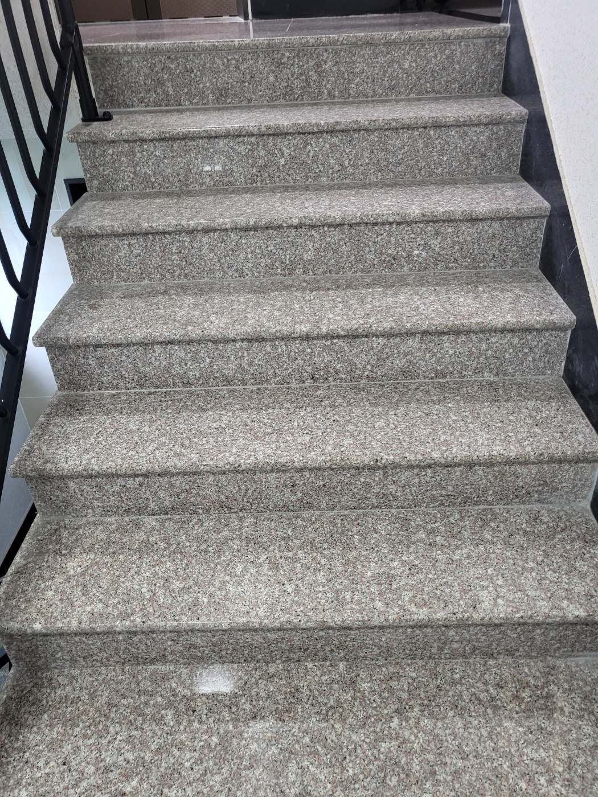
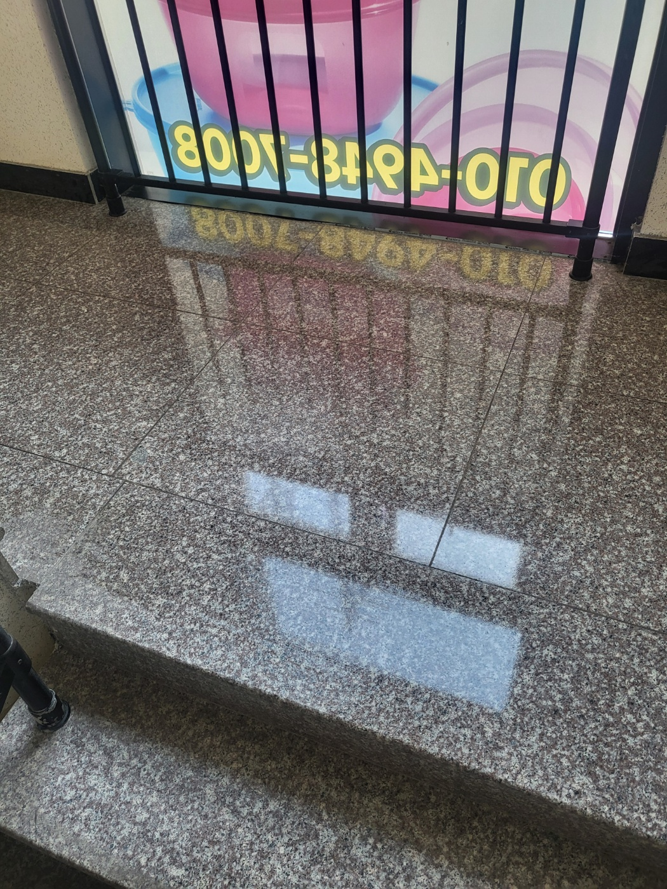
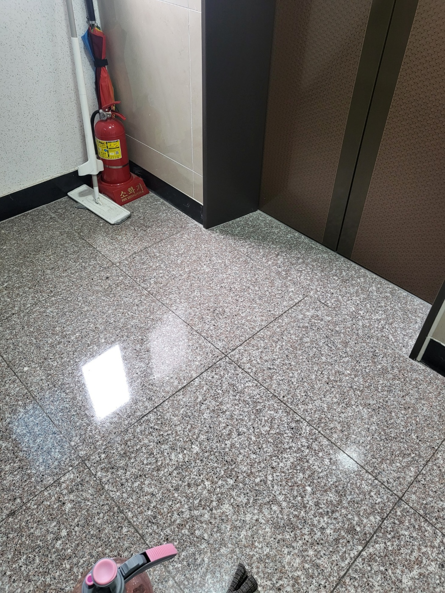
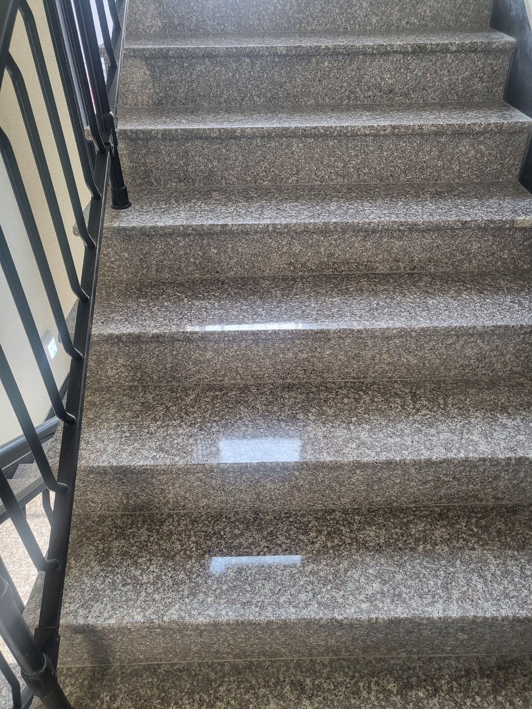
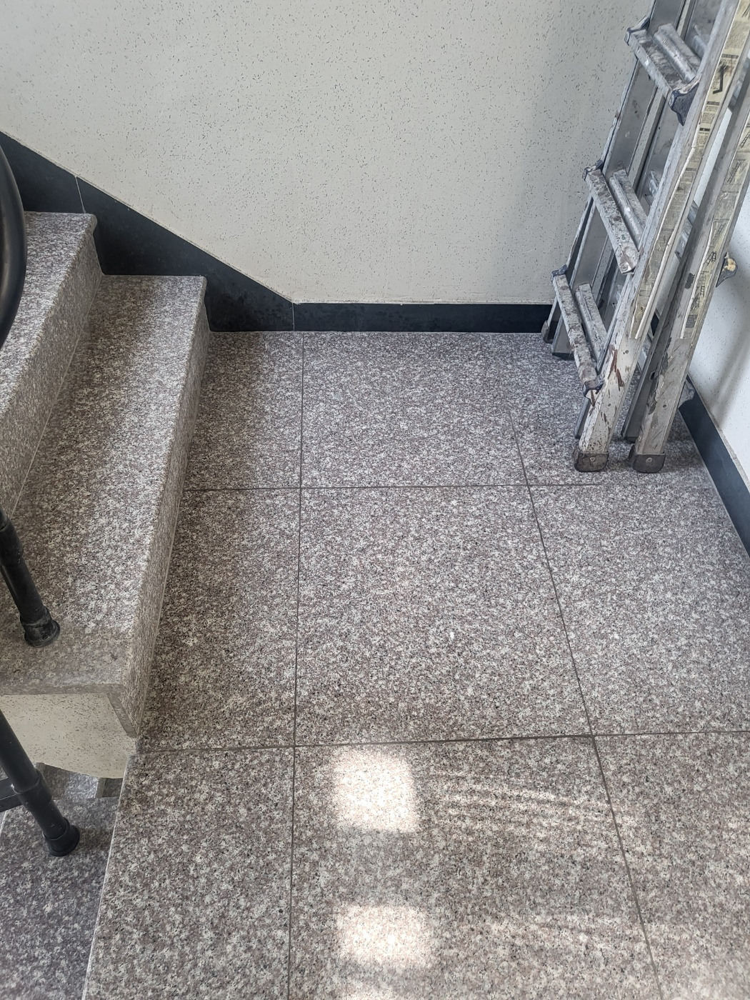
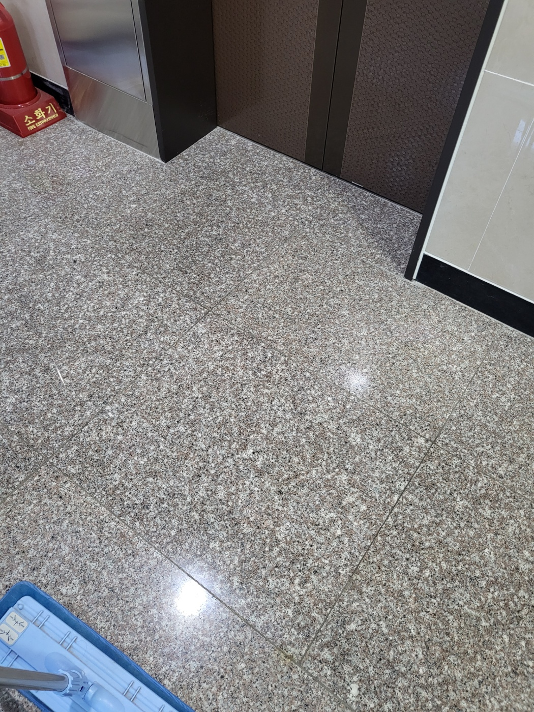
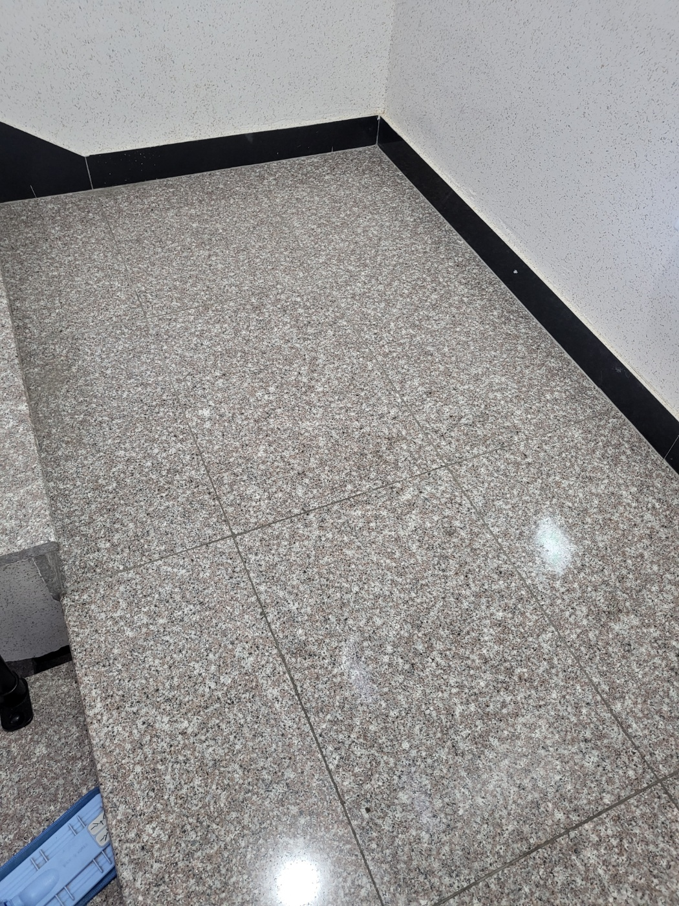

계단과 복도는 건물의 첫인상을 만드는 공용공간입니다
상가와 사무실 건물의 계단, 복도, 엘리베이터 앞은 외부 먼지와 발자국이 반복적으로 유입되는 공간입니다. 이용량이 많은 곳일수록 바닥에 오염이 빠르게 쌓이고 가장자리와 코너에는 먼지가 남기 쉽습니다.
퍼펙트케어는 바닥 재질과 이용 동선을 확인한 뒤 계단, 층간참, 복도, 엘리베이터 앞을 묶어 관리할 수 있습니다.

계단·복도·엘리베이터 앞 관리



석재 바닥은 먼지 제거와 마무리 상태가 중요합니다
계단과 공용부는 밝은 석재나 광택이 있는 바닥이 많아 잔여 먼지와 얼룩이 눈에 잘 띕니다. 바닥 표면뿐 아니라 벽면 가장자리, 난간 주변, 계단 코너까지 확인해 관리합니다.

실제 공용부 작업사진



상가·사무실 건물 공용부를 함께 관리할 수 있습니다
계단만 별도로 관리하거나 복도와 화장실까지 묶어 정기청소 범위를 정할 수 있습니다. 건물 규모, 층수, 이용량, 바닥 오염 정도에 따라 관리 횟수와 작업 범위를 상담합니다.
계단
복도
층간참
엘리베이터 앞
양산 계단청소·공용부 청소 무료 방문견적
현장 규모와 관리 범위를 확인한 뒤 안내드립니다. 대량건도 문제없습니다.